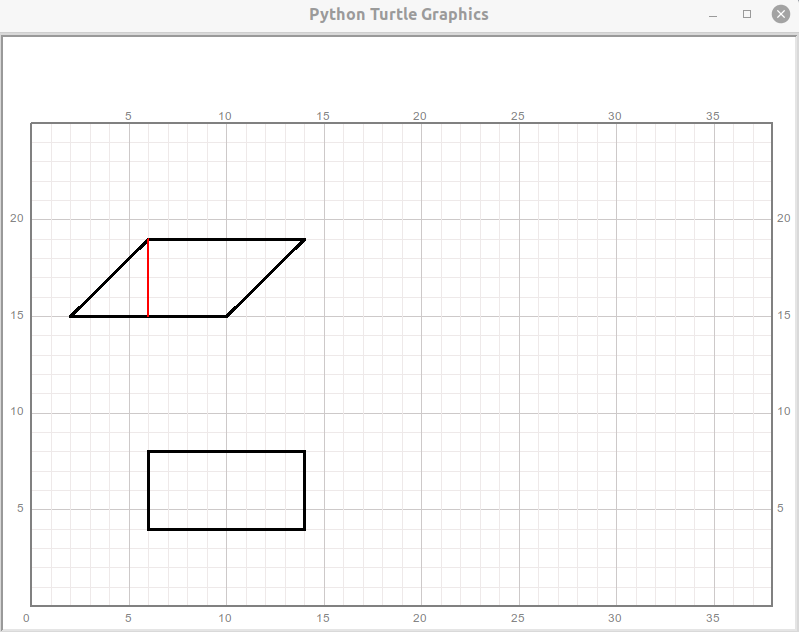

第23讲 平行四边形和它的面积
内容
第23讲 平行四边形和它的面积¶
Problem 问题描述¶
使用qianglib库提供的方法，绘制方格坐标纸，其中坐标系的原点(0,0)位于绘图区的最左下方，使用的scale值为20. Use the methods provided in the library qianglib, draw a grid coordinate system where the origin (0, 0) is at the bottom left of the coordinate system.
Use ‘black’ color, 3 as line width to draw following two quadrilaterals. 使用黑色、数值为3的线宽，分别绘制出下列两个列表所表示的四边形：
quad1:[(2, 15), (10, 15), (14, 19), (6, 19)] （四边形1）
quad2:[(6, 4), (14, 4), (14, 8), (6, 8)] （四边形2）
绘制出的两个图形是平行四边形或者矩形吗？ What are the exact shape names for the quadrilaterals drawn?
is quad1 a parallelogram（平行四边形）: ?
is quad2 a parallelogram: ?
is quad1 a rectangle（矩形）: ?
is quad2 a rectangle: ?
Count manually how many small square units (side length = 1) are contained in each figure drawn. This result is also the area of each corresponding figure. Note: If a side line of a figure penetrates the small square unit, it means that the small square unit is not completely contained in the figure. However, if more than half of the area of this square unit is included in the figure, count it on; otherwise, discard it. 手工数一数，绘制出的每一个图形内部包含多少个完整的边长为1的小正方形，这个数字同时就是对应的每一个图形的面积。注意：如果图形的一条边从正方形内部穿过，说明这个小正方形并不完全被包含在图形内部，仔细并估计这个正方形是否有超过一半的面积被包括在图形内部，如果是则可以把这个小正方形记入统计，如果不是，则放弃记入这个小正方形。
Area for quad1 is:?
Area for quad2 is:?
Try to find a line, indicated by the coordiante values of its two end points, to cut each figure into two parts. Splicing the two parts to make it a rectangle. In the process of cutting and splicing, the total area of the graphics remains unchanged. Does it mean that each parallelogram can be transformed to a rectangle that has the same area? 尝试找出一条线段（找到表示这条线段的两个端点即可），它把上面绘出的平行四边形分割成两部分，分割得到的两部分可以拼接称为绘制出的矩形。是不是每一个平行四边形都可以这样拼接称为一个面积和它相同的矩形？
end points of the line: (?, ?) and (?, ?)
Can every parallelogram be transformed to a rectangle with the same area by such cutting and splicing?: ?
Math Background 数学背景¶
由四条边组成的封闭图形称为四边形；由两组平行线段组成的四边形称为平行四边形
如果一个四边形是平行四边形，它不一定是矩形，更不一定是正方形
如果一个图形是矩形，它一定也是平行四边形；如果一个图形是正方形，那它也是矩形，也是平行四边形
平行四边形可以通过裁剪变成一个和它面积相同的矩形
平行四边形的面积公式: \(S=b \cdot h\)
矩形的面积公式： \(S=a \cdot b\)
Prerequisites 预备知识¶
[STRIKEOUT:rewrite polygon method in qianglib, add some support methods]
Solution 编程求解¶
[1]:
from turtle import setup, reset, pu, pd, bye, left, right, fd, bk, screensize
from turtle import goto, seth, write, ht, st, home, dot, pen, speed
from qianglib import prepare_paper, draw_grid, mark, lines, line, text
from qianglib import polygon
#from qianglib import generate_parallelogram, generate_rectangle, get_center, add_v
#from qianglib import rectangle
[2]:
width, height = 800, 600
setup(width, height, 0, 0)
[3]:
prepare_paper(width, height, scale=20, min_x=0, min_y=0, max_y=25)
[7]:
# Q1
quad1 = [(2, 15), (10, 15), (14, 19), (6, 19)]
quad2 = [(6, 4), (14, 4), (14, 8), (6, 8)]
polygon(quad1, line_width=3, color="black")
polygon(quad2, line_width=3, color="black")
[ ]:
# Q2
# quad1 is a parallelogram, not a rectangle
# quad2 is a parallelogram, and a rectangle as well.
[8]:
# Q3
# Area for quad1 = 32
# Area for quad3 = 32
# Their areas are equal to each other.
[11]:
# point(6, 19) and point(6, 15) could be endpoints of the line
# which cut the parallelogram and build a rectangle
p1, p2 = (6, 19), (6, 15)
line(p1, p2, color="red", line_width=2)
# Every parallelogram can be transformed to a rectangle (YES)

Exercise 课堂练习¶
Learn the method get_center. 体会get_center方法的作用
[12]:
def get_center(points):
x, y = 0, 0
for point in points:
x += point[0]
y += point[1]
return x/len(points), y/len(points)
def add_v(point1, point2):
return point1[0]+point2[0], point1[1]+point2[1]
from random import randint
def get_random_point(x_min=0, x_max=35, y_min=0, y_max=25):
return (randint(x_min, x_max), randint(y_min, y_max))
[13]:
A = get_random_point()
print(A)
mark(A, "A"+str(A), color="red")
(28, 2)
[14]:
B = get_random_point()
print(B)
mark(B, "B"+str(B), color="red")
(3, 2)
[15]:
lineAB = [A, B]
C = get_center(lineAB)
mark(C, "C"+str(C), color="blue")
[16]:
line(A, B)
[17]:
triangle1 = []
for i in range(3):
triangle1.append(get_random_point())
polygon(triangle1)
center_triangle1 = get_center(triangle1)
mark(center_triangle1, "Center")
[18]:
for i in range(len(triangle1)):
line1 = [triangle1[i], triangle1[(i+1)%len(triangle1)]]
line1_center = get_center(line1)
third_point = triangle1[(i+2)%len(triangle1)]
line(line1_center, third_point)
mark(line1_center)
[19]:
bye()
Summary 知识点小结¶
理解get_center方法的作用
学习qianglib库的一些方法的更新
复习方法的返回值：可以使用tuple类型让一个方法返回多个有意义的变量，这种返回方法也可以理解为方法只返回了一个tuple类型的变量
计算机小知识¶
[ ]:
Assignments 作业¶
According to the definition of parallelogram, declare and implement a method to tell whether a list variable with 4 coordinate valus of points represents a parallelogram? Give the method a name and carefully design its parameters and return values. 根据平行四边形的定义，编写一个方法判断：一个拥有四个点坐标信息元素的列表变量是否代表着一个平行四边形。你可以自己设定方法名，在编写这个方法前认真思考这个方法的参数和返回值如何设计才比较好。 Note: only consider the situation where a parallelogram has two sides parallel to either x or y axis. 备注:只考虑平行四边形有两条边平行于x或者y轴的情形
[ ]:
Below are 6 lists, each contains the coordinates of four points and may represent a parallelogram. For each list: use the
polygonmethod provided inqianglibto draw it. Then, call the method you implemented in the previous quantion and observe whether your method can correctly determine whether the drawn figure is a parallelogram or not. 如下给出了6行由四个点的坐标组成的列表，每一行都有可能代表着一个平行四边形。对于每一行的列表数据：用qianglib库里的polygon方法绘制出它代表的图形。随后，调用你上一步实现的方法，观察你的方法能否正确判断绘制出的图形是否是一个平行四边形。[(5, 9), (10, 9), (13, 14), (8, 14)]
[(15, 9), (20, 9), (23, 14), (20, 14)]
[(27, 9), (32, 10), (32, 14), (27, 13)]
[(5, 1), (10, 2), (10, 7), (5, 5)]
[(15, 4), (18, 1), (21, 4), (18, 7)]
[(27, 1), (32, 1), (32, 7), (27, 7)]
[ ]:
Assume that a list variable represents a parallelogram (only consider the case where at least one side of the parallelogram is parallel to either x or y axis), Can you figure out how to get the base and height of this parallelogram? Write a method to solve this problem.假设一个列表型变量表示一个平行四边形（仅考虑平行四边形一条边平行于坐标轴的情况），如何根据给定的四个顶点的坐标来得到这个平行四边形的一组底和高的大小？编写一个方法来求解这个问题。
[ ]:
Use the method written in the previous question to calculate the base and height of each parallelogram filtered from the question 2; calculate the area of each quadrilateral and compare it with the area obtained by mnually counting introduced in the class. 用上一题编写的方法来计算从第2题中筛选出来的每一个平行四边形的一组底和高，然后计算这个四边形的面积，和用课堂上介绍的数格子的方法得到的结果进行比较。
Note: only consider the situation where a parallelogram has two sides parallel to either x or y axis. 备注:只考虑平行四边形有两条边平行于x或者y轴的情形
[ ]: